IN — India
The main impact of bilateral tariffs at 25% on India would be only a small rise in GDP of 0.03% by Q17. Equities peak at +0.08% in Q15.
Demand and trade. Consumption peaks at +0.02 % vs baseline in Q17, from +0.01 in Q1 to +0.02 in Q20. Investment peaks at +0.09 % vs baseline in Q9, from +0.07 in Q1 to +0.07 in Q20. Net Exports peaks at +0.05 % vs baseline in Q13, from +0.04 in Q1 to +0.04 in Q20. Gov Spending peaks at -0.01 % vs baseline in Q17, from -0.00 in Q1 to -0.01 in Q20. Gov Debt peaks at +0.07 % vs baseline in Q20, from +0.00 in Q1 to +0.07 in Q20.
External / FX. The real exchange rate shows real appreciation (a stronger home currency). Currency Strength peaks at -0.01 % vs baseline in Q3, from -0.00 in Q1 to +0.00 in Q20.
Labour. Employment peaks at +0.03 % vs baseline in Q20, from +0.00 in Q1 to +0.03 in Q20. Unemployment peaks at -0.00 pp in Q19, from -0.00 in Q1 to -0.00 in Q20. Real Wages peaks at +0.03 % vs baseline in Q20, from +0.00 in Q1 to +0.03 in Q20.
Prices. The three-year CPI impulse is -0.03 percentage points. CPI Inflation peaks at -0.00 pp in Q3, from -0.00 in Q1 to +0.00 in Q20. Domestic Infl. peaks at -0.00 pp in Q3, from -0.00 in Q1 to +0.00 in Q20. Marginal Cost peaks at +0.02 % vs baseline in Q17, from +0.01 in Q1 to +0.02 in Q20.
Financial conditions. Policy Rate peaks at -0.02 pp (annualized) in Q5, from -0.01 in Q1 to +0.01 in Q20. Govt 2Y Yield peaks at -0.02 pp (annualized) in Q3, from -0.02 in Q1 to +0.01 in Q20. Govt 5Y Yield peaks at +0.02 pp (annualized) in Q20, from -0.01 in Q1 to +0.02 in Q20. Govt 10Y Yield peaks at +0.01 pp (annualized) in Q18, from +0.00 in Q1 to +0.01 in Q20. Bond Price peaks at +0.10 % vs baseline in Q5, from +0.03 in Q1 to -0.04 in Q20. Equity Index peaks at +0.08 % vs baseline in Q15, from +0.06 in Q1 to +0.07 in Q20. Tobin's Q peaks at +0.06 % vs baseline in Q9, from +0.05 in Q1 to +0.05 in Q20. House Prices peaks at +0.05 % vs baseline in Q20, from +0.00 in Q1 to +0.05 in Q20. Bank Credit peaks at +0.00 % vs baseline in Q20, from +0.00 in Q1 to +0.00 in Q20. Credit Spread peaks at +0.00 pp in Q1, from +0.00 in Q1 to +0.00 in Q20.
Sectoral and capital. Manuf. GDP peaks at +0.02 % vs baseline in Q16, from +0.01 in Q1 to +0.02 in Q20. Services GDP peaks at +0.02 % vs baseline in Q17, from +0.01 in Q1 to +0.02 in Q20. Capital Stock peaks at +0.01 % vs baseline in Q20, from +0.00 in Q1 to +0.01 in Q20.
Timing. By Q20 GDP is still +0.03% from baseline.
These figures are model IRFs versus baseline, not forecasts.
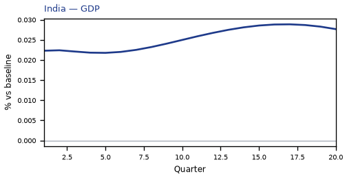
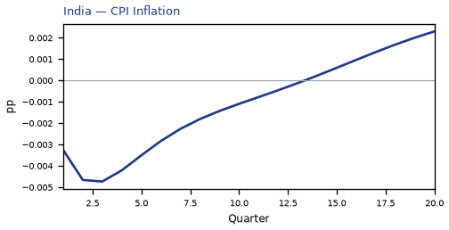
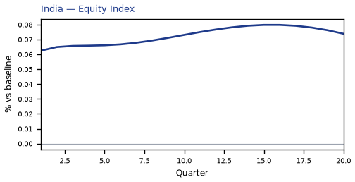
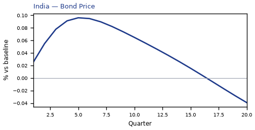
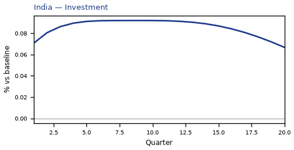
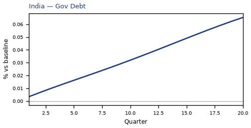
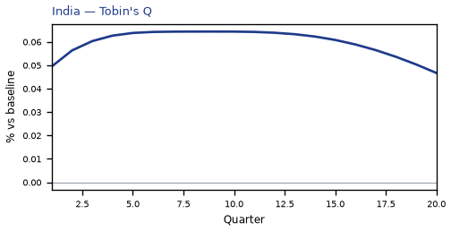
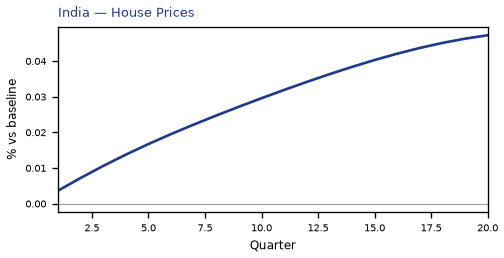
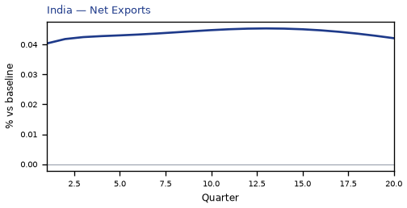
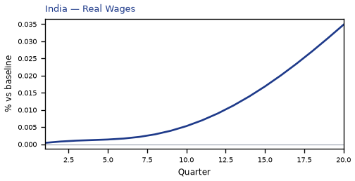
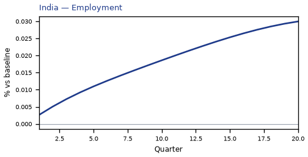

source=live · global_macro_v5 · contract v6 · Q1–Q20 JSON · not financial advice